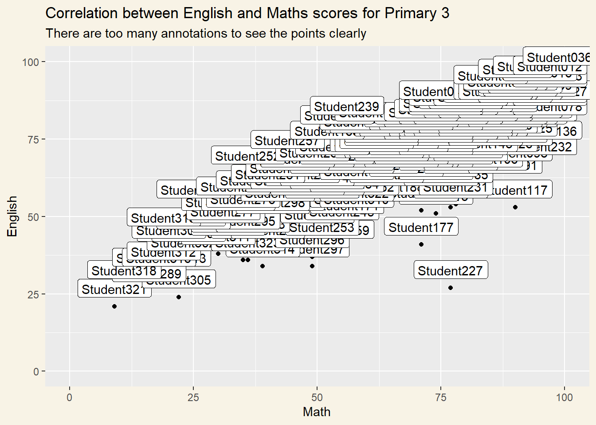

code block
pacman::p_load(ggrepel, patchwork,
ggthemes, hrbrthemes,
ggpubr, tidyverse) pacman::p_load(ggrepel, patchwork,
ggthemes, hrbrthemes,
ggpubr, tidyverse) exam_data <- read_csv("data/Exam_data.csv")summary(exam_data) ID CLASS GENDER RACE
Length:322 Length:322 Length:322 Length:322
Class :character Class :character Class :character Class :character
Mode :character Mode :character Mode :character Mode :character
ENGLISH MATHS SCIENCE
Min. :21.00 Min. : 9.00 Min. :15.00
1st Qu.:59.00 1st Qu.:58.00 1st Qu.:49.25
Median :70.00 Median :74.00 Median :65.00
Mean :67.18 Mean :69.33 Mean :61.16
3rd Qu.:78.00 3rd Qu.:85.00 3rd Qu.:74.75
Max. :96.00 Max. :99.00 Max. :96.00 A comparison between annotations using geom_label(), geom_text() and package ggrepel
ggplot(data=exam_data,
aes(x= MATHS,
y=ENGLISH)) +
geom_point() +
geom_smooth(method=lm,
linewidth=0.5,
formula= y~x) +
geom_label_repel(aes(label = ID),
fontface = "bold") +
coord_cartesian(xlim=c(0,100),
ylim=c(0,100)) +
labs(x="Math", y="English",
title="Comparing English and Math Scores for Primary 3",
subtitle="There is a positive correlation between Math and English scores") +
stat_cor(label.x.npc = "left", label.y.npc = "top",
aes(label=paste(after_stat(rr.label)))) +
theme_stata() +
theme(plot.background=element_rect(fill="#F8F3E6",colour="#F8F3E6"))
ggplot(data=exam_data,
aes(x= MATHS,
y=ENGLISH)) +
geom_point() +
geom_smooth(method=lm,
linewidth=0.5,
formula= y~x) +
geom_label(aes(label = ID),
fontface = "bold") +
coord_cartesian(xlim=c(0,100),
ylim=c(0,100)) +
labs(x="Math", y="English",
title="Comparing English and Math Scores for Primary 3",
subtitle="There are too many labels to view the scatterplot well") +
theme_stata() +
theme(plot.background=element_rect(fill="#F8F3E6",colour="#F8F3E6"))

ggplot(data=exam_data,
aes(x = MATHS)) +
geom_histogram(bins=20,
boundary = 100,
color="#64605f",
fill="grey90") +
labs(x="Math Scores", y="count",
title="Distribution of Maths scores") +
theme_ipsum_rc()